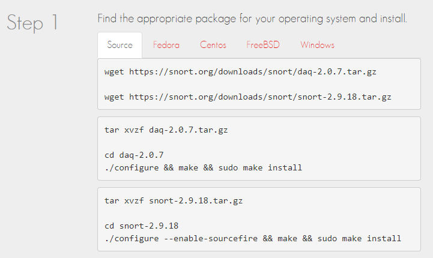
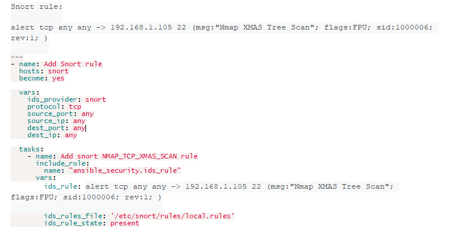
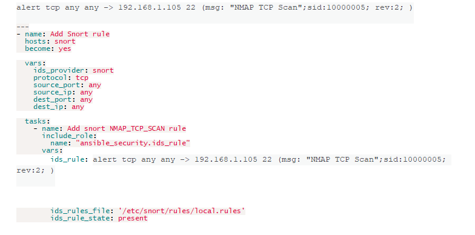

Exercise 1.3 - Executing the first Snort playbook
Objectives
To showcase how to automate a network intrusion detection and intrusion prevention system in a security environment, this lab will take you through managing a Snort IDS instance. Snort analyzes network traffic and compares it against some given rule set. In this lab, Snort is installed on a Red Hat Enterprise Linux machine and Ansible interacts with it by accessing the RHEL node over SSH.
Step 1 - Snort
Before we show you some actual QRadar Incident Remediation using Ansible, we want to inroduce you to Snort, one of the most used Intrusion Detection & Prevention System (IDP) systems out there.
What is Snort?Snort is a free open source network intrusion detection system and intrusion prevention system created in 1998 by Martin Roesch, founder and former CTO of Sourcefire. Snort is now developed by Cisco, which purchased Sourcefire in 2013.
Installing Snort into the Operating SystemIn our Lab, Snort has been installed and setup for you. If you want to use your own version of the image, you need to install Snort into the operating system or virtual machine of your choice. To install the latest version of Snort, you can follow the installation instruction from the Snort website. Note that installation instructions are vary from OSes. e.g. the instruction below shows how to install snort from its source code on Linux.

You can find more information here: Snort Get Started
While you install the snort, you system may miss some libraries. You need to install the required libraries, too.
Step 2 - Accessing the Snort server
In order to connect to the Snort installation, we need to to find the IP address of the machine it is installed on. You can then get
the IP address of the Snort machine by looking up the information on the inventory file ~/lab_inventory/hosts. In your VS Code online editor, in the menu bar click on
File > Open File… and open the file /home/student<X>/lab_inventory/hosts. Search and find the entry for snort which looks
like this:
snort ansible_host=22.333.44.5 ansible_user=ec2-user private_ip=172.16.1.2
NOTE
The IP addresses here are for demo purposes and will be different in your case. You have your own dedicated Snort setup in your individual lab environment.
Once you find the IP address, it’s time to access the Snort server. The connection uses a SSH key pre-installed on the control host,
the user for the Snort server is ec2-user. In your VS Code online editor, open
a terminal and access the snort server via:
[student<X>@ansible ~]$ ssh ec2-user@22.333.44.5
Warning: Permanently added '22.333.44.5' (ECDSA) to the list of known hosts.
Last login: Mon Aug 26 12:17:48 2019 from h-213.61.244.2.host.de.colt.net
[ec2-user@ip-172-16-1-2 ~]$
To verify snort is installed and configured properly, you can call it via sudo and ask for the version:
[ec2-user@ip-172-16-1-2 ~]$ sudo snort --version
,,_ -*> Snort! <*-
o" )~ Version 2.9.13 GRE (Build 15013)
'''' By Martin Roesch & The Snort Team: http://www.snort.org/contact#team
Copyright (C) 2014-2019 Cisco and/or its affiliates. All rights reserved.
Copyright (C) 1998-2013 Sourcefire, Inc., et al.
Using libpcap version 1.5.3
Using PCRE version: 8.32 2012-11-30
Using ZLIB version: 1.2.7
Also, check if the service is actively running via sudo systemctl:
[ec2-user@ip-172-16-1-2 ~]$ sudo systemctl status snort
? snort.service - Snort service
Loaded: loaded (/etc/systemd/system/snort.service; enabled; vendor preset: disabled)
Active: active (running) since Mon 2019-08-26 17:06:10 UTC; 1s ago
Main PID: 17217 (snort)
CGroup: /system.slice/snort.service
+-17217 /usr/sbin/snort -u root -g root -c /etc/snort/snort.conf -i eth0 -p -R 1 --pid-path=/var/run/snort --no-interface-pidfile --nolock-pidfile
[...]
NOTE
It might happen that the snort service is not running. In this demo environment this is not a problem, if that is the case, restart it with
systemctl restart snortand check the status again. It should be running.
Exit the Snort server now by pressing CTRL and D, or by typing exit on the
command line. All further interaction will be done via Ansible from the Ansible control host.
Step 3 - Simple Snort rules
In the most basic capacity, Snort works by reading some rules and acting according to them. In this lab, we will be working with some simple examples of Snort in order to show how to automate this configuration with Ansible. This session is not designed to dive into the specifics of Snort rules and the complexity involved in large setups, however, it is helpful to understand the basic structure of a simple rule so that you are aware of what you are automating.
A rule consists of a rule header and rule options and is saved in files.
The Snort rule header breaks down into:
- an action
- the protocol to look for like TCP
- source information like IP and port
- destination information like IP and port
The Snort rule options are keywords separated by ; and can be:
- messages to output when a rule matches
- SID, a unique identifier of the rule
- content to search for in the packet payload, for example a suspicious string
- or byte tests to check for binary data
- a revision of the rule
- the severity of the attack, called “priority”
- a pre-defined attack type called “classtype” to better group the rule with other rules
- and others.
Not all options are mandatory, some also only override existing default values.
A Snort rule’s outline is as follows:
[action][protocol][sourceIP][sourceport] -> [destIP][destport] ( [Rule options] )
If you want to learn more about Snort rules, check out the Snort Rule
Infographic or dive into the Snort Users Manual (PDF). If you want
to have a look at some real Snort rules you can also access the Snort installation in your lab and look at the content of the
/etc/snort/rules directory.
Step 4 - Example playbook
As discussed earlier, Ansible automation is described in playbooks. Playbooks consist of tasks. Each task uses a module and the module’s corresponding parameters to describe the change that needs to be done or the state that is desired.
Ansible releases are shipped with a set of modules, however, in Ansible 2.9 there are no modules to interact with Snort yet. For this reason we wrote a set of modules for managing Snort. This way, we can provide value without having to wait for a new Ansible release. Also, we are able to update our modules faster. This is especially important in the early life of a newly developed module.
These Snort modules are shipped as part of a “role”. To better describe a role, think about how you wrote your playbook in the last section. While it is possible to write a playbook in one file as we did earlier, often writing all automation pieces in one place results in creating long, complicated playbooks. At some point you will want to reuse the automation content you wrote in your playbooks already. Therefore, you will need to organize things in a way to get multiple smaller playbooks to work together. Ansible Roles are the way we achieve this. When you create a role, you deconstruct your playbook into parts and those parts sit in a directory structure.
There are multiple advantages in using roles to write your automation. The most notable is that the complexity and playbook intelligence is hidden from the user. The other important advantage is that roles can be easily shared and re-used.
Back to the Snort use case: as mentioned, the Snort modules are shipped as part of a role. This role is called ids_rule. Open the Github repository link in the web browser, click on the library path. You will find the module snort_rule.py there. This module shipped as a part of the ids_rule role, can create and
change snort rules.
If you take a closer look at the role you’ll see that it comes with a re-usable playbook at tasks/snort.yml.
Let’s have a look at how this playbook can be re-written to use the roles directly. To do this, we first need to download and install
the role on our control host. There are several ways to do this but a very convenient way is the command line tool ansible-galaxy. This tool installs roles directly from the archives, Git URLs and from
Ansible Galaxy. Ansible Galaxy is a community hub for finding and sharing Ansible content. It
provides features like rating, quality testing, proper searching and so on. For example, the role mentioned above can be found in Ansible
Galaxy at ansible_security/ids_rule.
On the command line, you can use the ansible-galaxy tool to download and
install the ids_rule role with a single command. Execute the following command
in a terminal of your VS Code online editor:
[student<X>@ansible ~]$ ansible-galaxy install ansible_security.ids_rule
- downloading role 'ids_rule', owned by ansible_security
- downloading role from https://github.com/ansible-security/ids_rule/archive/master.tar.gz
- extracting ansible_security.ids_rule to /home/student<X>/.ansible/roles/ansible_security.ids_rule
- ansible_security.ids_rule (master) was installed successfully
As you see the role is installed to the roles default path, ~/.ansible/roles/.It was prefixed by ansible_security, this is the name of the project used for security roles, such as what we
are using in this lab.
Now that we have the role installed on our control host, we can use it in a playbook. In order to use the role, create a new file
called add_snort_rule.yml in your VS Code online editor. Save it in the home
directory of your user, and add the name Add Snort rule and target hosts, here
snort. Since we need root rights to make any changes on Snort, add the
become flag so that Ansible would take care of privilege escalation.
---
- name: Add Snort rule
hosts: snort
become: yes
Next we need to add the variables required by our playbook. The role we are using is written in a way that can work with multiple IDS
providers, all the user needs to provide is the name of the IDS and the role will take care of the rest. Since we are managing a Snort
IDS, we need to set the value of ids_provider variable to snort.
---
- name: Add Snort rule
hosts: snort
become: yes
vars:
ids_provider: snort
Next, we need to add the tasks. Tasks are the components which make the actual changes on the target machines. Since we are using a
role, we can simply use a single step in our tasks, include_role, to add it to
our playbook. In order to make the role suitable for our use case, we add the following task-specific variables:
- the actual rule
- the Snort rules file
- the state of the rule, present or absent
---
- name: Add Snort rule
hosts: snort
become: yes
vars:
ids_provider: snort
tasks:
- name: Add snort password attack rule
include_role:
name: "ansible_security.ids_rule"
vars:
ids_rule: 'alert tcp any any -> any any (msg:"Attempted /etc/passwd Attack"; uricontent:"/etc/passwd"; classtype:attempted-user; sid:99000004; priority:1; rev:1;)'
ids_rules_file: '/etc/snort/rules/local.rules'
ids_rule_state: present
Let’s have a quick look at what is happening here. the rule header is alert tcp any
any -> any any, so we create an alert for tcp traffic from any source to any destination. The rule options define the human
readable Snort message if and when the rule finds a match. uricontent which is
a specialized version of content making it easier to analyze URIs. The
classtype is set to attempted-user which is the default class for “attempted user privilege gain”. SID is set
to a value high enough for user defined rules. The priority is 1 and finally
since this is the first version of this rule we set the revision to 1.
The other variables, ids_rules_file and ids_rule_state provide the user defined location for the rules file and state that the rule
should be created if it does not exist already (present).
Step 5 - Run the playbook
It is now time to execute the playbook. Call ansible-playbook with the
playbook name:
[student1@ansible ~]$ ansible-playbook add_snort_rule.yml
PLAY [Add Snort rule] *****************************************************************
TASK [Gathering Facts] ****************************************************************
ok: [snort]
TASK [Add snort password attack rule] *************************************************
TASK [ansible_security.ids_rule : verify required variable ids_provider is defined] ***
skipping: [snort]
TASK [ansible_security.ids_rule : ensure ids_provider is valid] ***********************
skipping: [snort]
TASK [ansible_security.ids_rule : verify required variable ids_rule is defined] *******
skipping: [snort]
TASK [ansible_security.ids_rule : verify required variable ids_rule_state is defined] *
skipping: [snort]
TASK [ansible_security.ids_rule : include ids_provider tasks] *************************
included: /home/student1/.ansible/roles/ansible_security.ids_rule/tasks/snort.yml for
snort
TASK [ansible_security.ids_rule : snort_rule] *****************************************
changed: [snort]
RUNNING HANDLER [ansible_security.ids_rule : restart snort] ***************************
changed: [snort]
PLAY RECAP ****************************************************************************
snort : ok=4 changed=2 unreachable=0 failed=0 skipped=4 rescued=0 ignored=0
As you can see when you run this playbook, there are many tasks executed in addition to adding the rules. For instance, the role reloads the Snort service after the rule is added. Other tasks ensure that the variables are defined and verified. This yet again highlights the value of using roles. By taking advantage of roles, you are not only making your content re-usable but you can also add verification tasks and other important steps and keep them neatly hidden inside the role. The users of the role do not need to know the specifics of how Snort works in order to use this role as part of their security automation.
Step 6 - Verify changes
A quick way to check if the rules were written correctly is to SSH to the Snort server and look for the content of the /etc/snort/rules/local.rules file.
Another way is to use Ansible on our control host. To do this we use a different role to verify if a Snort rule is in place. This role
searches and finds existing rules in Snort and is called ids_rule_facts.
To use this role, as we did previously, we install it using ansible-galaxy:
[student<X>@ansible ~]$ ansible-galaxy install ansible_security.ids_rule_facts
- downloading role 'ids_rule_facts', owned by ansible_security
- downloading role from https://github.com/ansible-security/ids_rule_facts/archive/master.tar.gz
- extracting ansible_security.ids_rule_facts to /home/student1/.ansible/roles/ansible_security.ids_rule_facts
- ansible_security.ids_rule_facts (master) was installed successfully
In our VS Code online editor, we create a playbook, verify_attack_rule.yml
to use it. Set the name of the playbook to something like “Verify Snort rule”. The values for hosts, the IDS provider variable and the
become flag can be set to the same as in our previous playbook.
---
- name: Verify Snort rule
hosts: snort
become: yes
vars:
ids_provider: snort
Next, we import the role ids_rule_facts. We also need to provide a search
string to identify the rule we are looking for. In our example, considering the rule we have created, it makes sense to use the
uricontent rule option for this purpose.
---
- name: Verify Snort rule
hosts: snort
become: yes
vars:
ids_provider: snort
tasks:
- name: import ids_rule_facts
import_role:
name: 'ansible_security.ids_rule_facts'
vars:
ids_rule_facts_filter: 'uricontent:"/etc/passwd"'
And most importantly, we want to be able to see what is actually found. The ids_rule_facts stores the data it collects as Ansible facts. Ansible facts are information
specific to each individual host which can be used in further tasks. Therefore, we add another task to output these facts.
---
- name: Verify Snort rule
hosts: snort
become: yes
vars:
ids_provider: snort
tasks:
- name: import ids_rule_facts
import_role:
name: 'ansible_security.ids_rule_facts'
vars:
ids_rule_facts_filter: 'uricontent:"/etc/passwd"'
- name: output rules facts
debug:
var: ansible_facts.ids_rules
Now let’s execute the playbook to verify that our rule is part of the Snort installation:
[student<X>@ansible ~]$ ansible-playbook verify_attack_rule.yml
PLAY [Verify Snort rule] **************************************************************
TASK [Gathering Facts] ****************************************************************
ok: [snort]
TASK [ansible_security.ids_rule_facts : collect snort facts] **************************
ok: [snort]
TASK [debugoutput rules facts] ********************************************************
ok: [snort] =>
ansible_facts.ids_rules:
- alert tcp and any -> any any (msg:"Attempted /etc/passwd Attack";
uricontent:"/etc/passwd"; classtype:attempted-user; sid:99000004; priority:1; rev:1;)
PLAY RECAP ****************************************************************************
snort : ok=3 changed=0 unreachable=0 failed=0 skipped=0 rescued=0 ignored=0
The last task outputs the rule which was found by the role. As you can see, it is the rule we previously added.
Congratulations! You have completed the first steps of automating Snort with Ansible. Head back to the exercise overview and continue with the next step.
Additional Playbooks - adding more Snort Rules
Below we show you some other useful playbooks that will add more rules to /etc/snort/rules/local.rules file.
Add new Snort signature for NMAP TCP XMAS SCAN
Identify NMAP XMAS Scan: as we know that TCP communication follows three-way handshake to established TCP connection with target machine but sometimes instead of using SYN, SYN/ACK, ACK flag attacker choose XMAS scan to connect with the target by sending data packets through Fin, PSH & URG flags. Let assume attacker may choose XMAS scanning for network enumeration then in that situation we can apply the following rule in snort local rule file.
Add new Snort signature for NMAP TCP SCAN
Identify NMAP TCP Scan: now in order to connect with the target network, an attacker may go for networking enumeration either using TCP Protocol or UDP protocol. Let’s assume attacker may choose TCP scanning for network enumeration then in that situation we can apply the following rule in snort local rule file.
You are done with the exercise. You can now turn back to the list of exercises or continue with 1.4, which is the last exercise of section 1